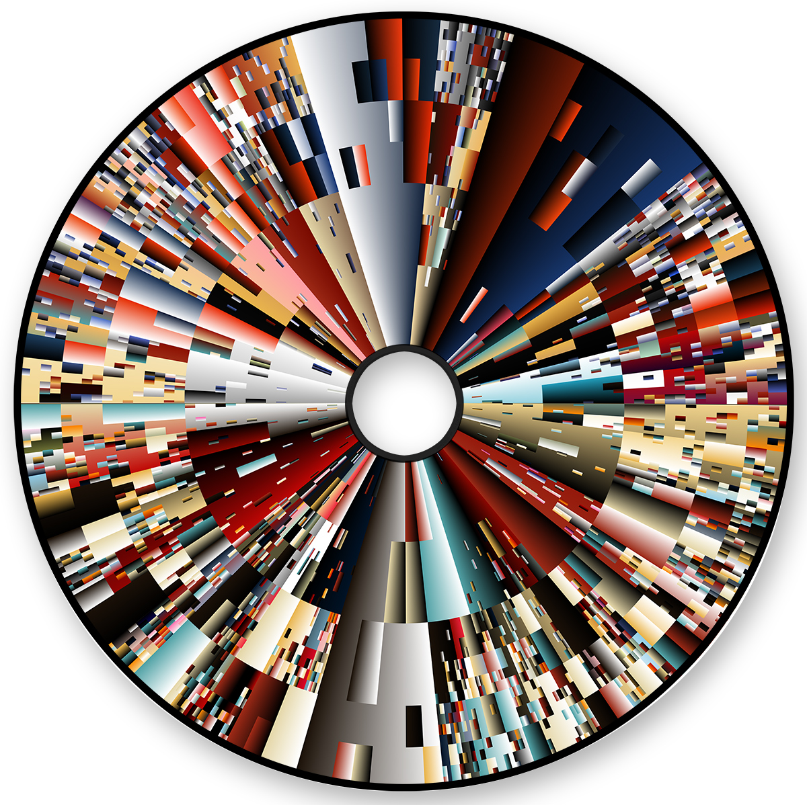
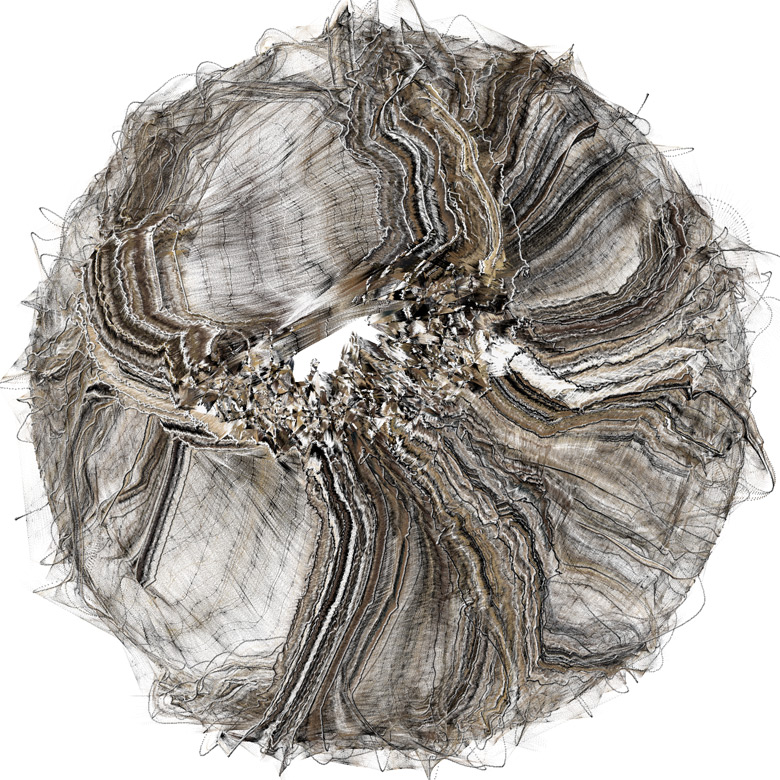

generative design
what is generative design?
a system of rules or a process that produces some outcome
example:
print either "/" or "\" at random

example:
draw a line through time where x and y are a combination of different sin waves

example:
Holger Lippmann


example:
J Tarbell


example:
generative rules inspired by nature

example:
"parametric architecture"

example:
A.I. and machine learning
- generative design is a sort of "meta" design
- results can be unexpected
- generative design is collaboration between designer and system
- communicating through code
elements of generation
logic
- creates rules
- decision making (if... then...)
mathematics
- function to define position, colors, shape etc
- (can be very simple to very complex!)
randomness
- slight variation
- "non-deterministic"
input and influence
- conditioned on some external factor
- e.g. cursor position, other elements, time, music input, weather data etc
- reactive
exploration!